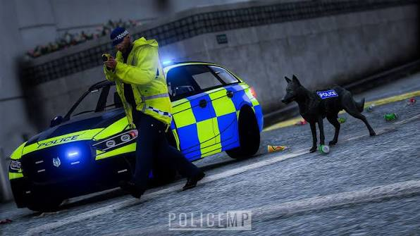
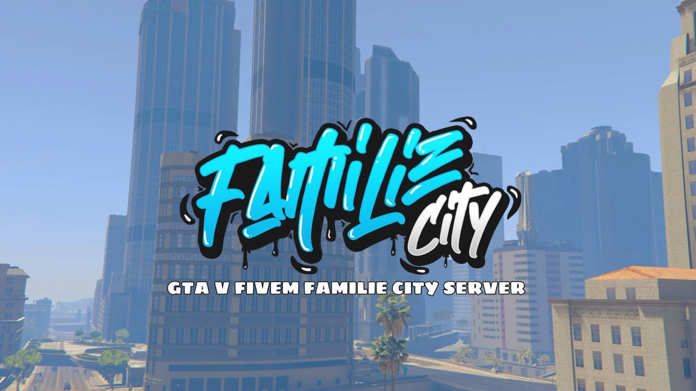
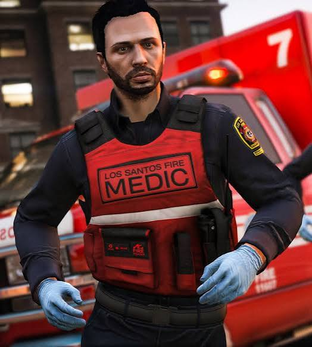
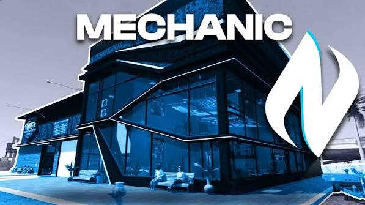
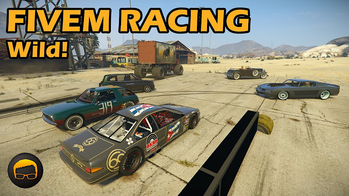
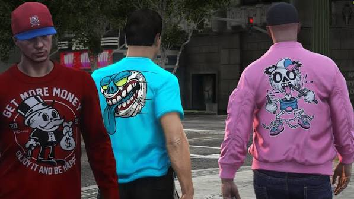

01
Police
ดูแลความสงบในเมือง รับแจ้งเหตุ และจัดการสถานการณ์ต่าง ๆ
Law
FIVEM ROLEPLAY
FiveM เป็นพื้นที่สำหรับเล่น Roleplay ที่ผู้เล่นสามารถเลือกบทบาท ทำงาน และสร้างเรื่องราวของตัวเองในเมือง
Explore Roles
01 — ABOUT FIVEM
02 / ROLES
ตัวอย่างบทบาทที่พบได้บ่อยในเมือง Roleplay

ดูแลความสงบในเมือง รับแจ้งเหตุ และจัดการสถานการณ์ต่าง ๆ

ช่วยเหลือผู้เล่นที่ได้รับบาดเจ็บ และดูแลสถานการณ์ฉุกเฉิน

ซ่อมรถ ปรับแต่งรถ และช่วยเหลือผู้เล่นที่มีปัญหากับรถ

สายความเร็วที่ชอบรถ การแข่งขัน และการแต่งรถ

ใช้ชีวิตในเมืองแบบทั่วไป ทำงาน หาเงิน และสร้างเรื่องราวของตัวเอง
เปิดร้านหรือทำธุรกิจ และสร้างรายได้จากผู้เล่นในเมือง
03 / MY FAVORITE
บทบาท Racer เป็นหนึ่งในบทบาทที่ชอบ เพราะได้เล่นกับรถ ปรับแต่งรถ และมีความตื่นเต้นจากการแข่งขัน
อีกจุดที่ชอบคือสามารถเล่นร่วมกับเพื่อน และสร้างกลุ่มหรือเรื่องราวของตัวเองในเมืองได้
04 / ABOUT
เลือกทำ Fansite เรื่อง FiveM เพราะชอบรูปแบบการเล่น Roleplay ที่ไม่ได้มีแค่ภารกิจจากเกม แต่ผู้เล่นสามารถสร้างตัวละคร และเรื่องราวของตัวเองได้
“
Your character. Your choices. Your story.ทุกการตัดสินใจทำให้เรื่องราวในเมืองแตกต่างกัน